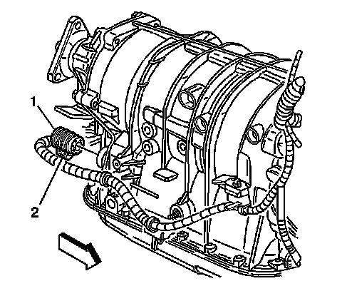
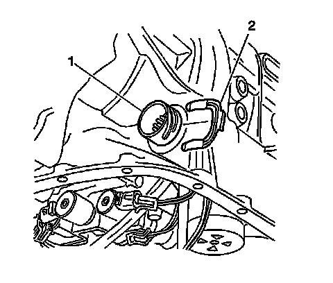
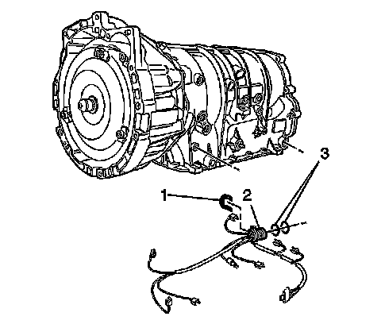

Wiring Harness: Service and Repair
Transmission Internal Electrical Harness Replacement
Removal Procedure
1. Remove the Transmission fluid pan and filter. Refer to Automatic Transmission Fluid and Filter Replacement (Removal and Replacement) .

2. Disconnect the transmission wiring harness connector (1) from the transmission by rotating the locking latch (2) counterclockwise.

3. Disconnect the internal wiring harness from components (1-8).

4. Remove the internal wiring harness retainer (2) from the internal wiring harness (1).

5. Remove the internal wiring harness (2) from the transmission.
6. Remove the O-ring seals (3) from the internal wiring harness (2) only if the O-rings are cut or worn.
Installation Procedure
1. Install new O-ring seals (3) onto the internal wiring harness (2) if the O-rings were previously removed.
2. Install the internal wiring harness (2) to the transmission.
3. Install the internal wiring harness retainer (2) to the internal wiring harness (1).
4. Connect the internal wiring harness to components (1-8).
5. Connect the transmission wiring harness connector (1) to the transmission by rotating the locking latch (2) clockwise.
6. Install the Transmission fluid pan and filter. Refer to Automatic Transmission Fluid and Filter Replacement (Removal and Replacement) .
Important: It is recommended that transmission adaptive pressure (TAP) information be reset.
Resetting the TAP values using a scan tool will erase all learned values in all cells. As a result, The ECM, PCM or TCM will need to relearn TAP values. Transmission performance may be affected as new TAP values are learned.
7. Reset the TAP values. Refer to Control Module References (Programming and Relearning) .